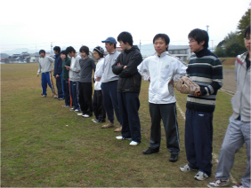
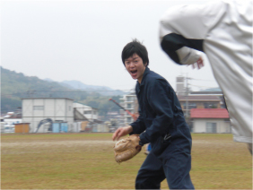
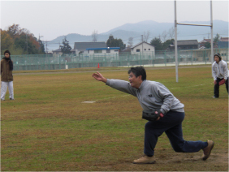
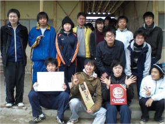

09 年秋 物理科学科ソフトボール大会 準優勝
11 月 22 (土)、西条共同研修センターグランドで物理科学科ソフトボール大会が行われた。光物性研究室は、谷口先生の御尽力の結晶である「 HiSOR 」と御還暦 60 歳を意味する「 60 」を盛り込んだ「至高魂 60 」(ハイソウル 60 ) というチーム名で大会に臨んだ。午前中の予選リーグでは木村准教授の豪速球を武器に 2 勝 1 敗の好成績を残した。勢いこのままに決勝トーナメントも勝ち続けようと誓い合った至高魂 60 であったが、予期せぬ降雨に大会は中止となった。最終順位の決定は各チーム代表によるジャンケンとなり、主将古本がチーム全員の「運」を受け取りジャンケンに挑んだ。準決勝を勝利し、決勝戦。残念ながら今大会は準優勝となったが、勉学だけでなくスポーツにも全力で取り組む姿勢は光物性研究室の結束の強さを証明するものであった。
|  準備万端ッ！ |
 ふんぁッ・・・ Σ（￣ロ￣lll)！ |
|  これが up spin だッッ！！ |
 準優勝 |